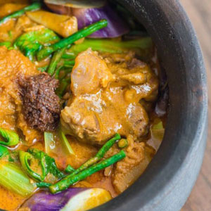
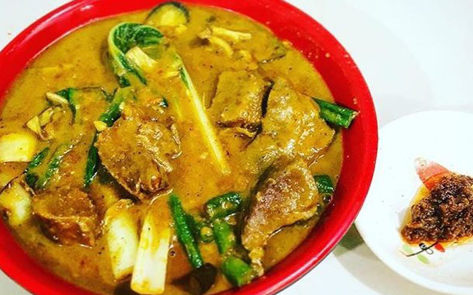

Local Dishes Recipe 5:
Kare-Kare
- Dish Description:
- Kare Kare is a type of Filipino stew with a rich and thick peanut sauce. It is a popular dish in the Philippines served during special occasions. The traditional recipe is composed of ox tail. There are instances wherein both ox tripe and tail are used. The vegetable components of the dish are string beans, eggplant, bok choy, and banana blossoms. Lightly browned toasted ground rice is used to thicken the sauce. Palayok or clay pot is used to cook this dish. It also functions as the serving bowl at the same time.The best way to eat kare-kare is to pair it with plain white rice. Bagoong alamang or fermented shrimp paste completes the dish by providing flavor.

Ingredients:
- 3 lbs oxtail cut in 2 inch slices you an also use tripe or beef slices
- 1 piece small banana flower bud sliced
- 1 bundle pechay or bok choy
- 1 bundle string beans cut into 2 inch slices
- 4 pieces eggplants sliced
- 1 cup ground peanuts
- 1/2 cup peanut butter
- 1/2 cup shrimp paste
- 34 Ounces water about 1 Liter
- 1/2 cup annatto seeds soaked in a cup of water
- 1/2 cup toasted ground rice
- 1 tbsp garlic minced
- 1 piece onion chopped
- salt and pepper
Directions:
- In a large pot, bring the water to a boil.
- Put in the oxtail followed by the onions and simmer for 2.5 to 3 hrs or until tender (35 minutes if using a pressure cooker).
- Once the meat is tender, add the ground peanuts, peanut butter, and coloring (water from the annatto seed mixture) and simmer for 5 to 7 minutes.
- Add the toasted ground rice and simmer for 5 minutes.
- On a separate pan, saute the garlic then add the banana flower, eggplant, and string beans and cook for 5 minutes.
- Transfer the cooked vegetables to the large pot (where the rest of the ingredients are)
- Add salt and pepper to taste.
- Serve hot with shrimp paste. Enjoy!